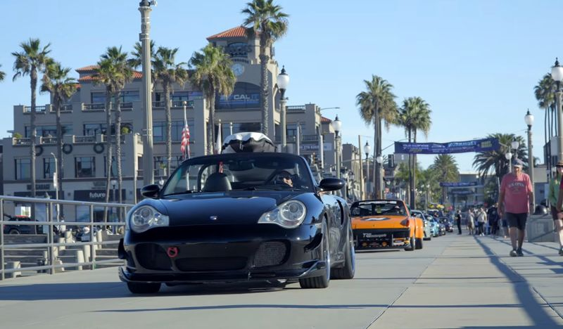

Lately
These days the car spends more time on canyon roads and at meets than on track: drives with SoCal Drivers Club, Cars & Coffee runs, and a spot on the pier at ünStock.

ünStock 2026
On the Huntington Beach pier, and featured in the PCA’s spotlight video.
 ►
►The Ortega drive
Top down through the canyons with friends. Onboard video.
 ►
►Cars & Coffee run
An early-morning drive in to Cars & Coffee.
 ►
►GT3 RS at Speed Vegas
A day off from the 996, in a 992 GT3 RS.